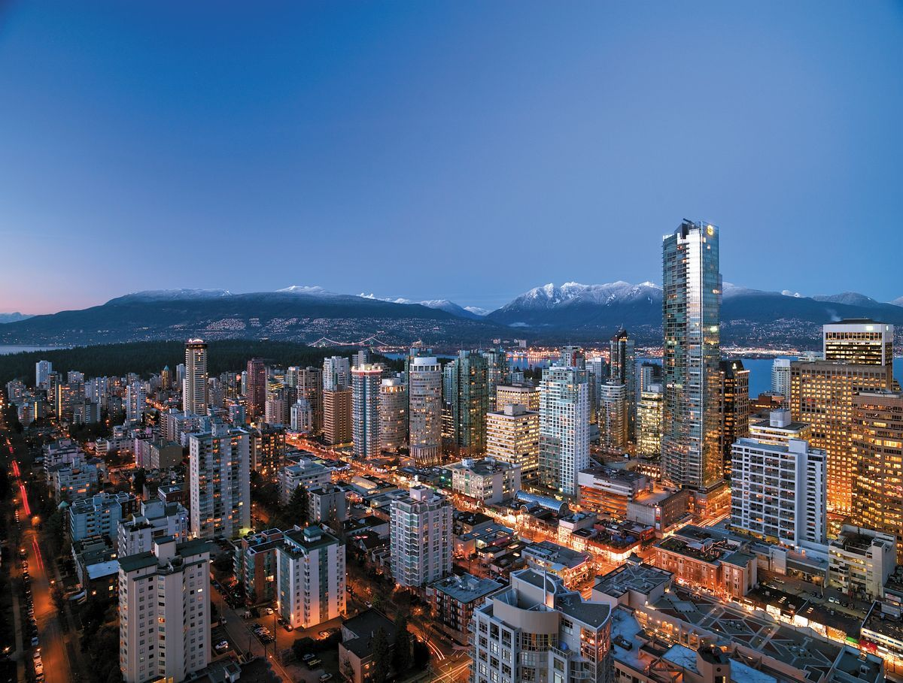

Vancouver: Where Nature Meets Urban Sophistication
Nestled between the Pacific Ocean and the Coast Mountains, Vancouver stands as a testament to
the harmonious coexistence of nature and modernity. Renowned for its breathtaking natural scenery, diverse
cultural tapestry, and vibrant city life, Vancouver captivates visitors and residents alike with its unique
blend of outdoor adventure, cosmopolitan charm, and laid-back West Coast vibe.
Vancouver from above
A Tapestry of Nature:
One cannot speak of Vancouver without mentioning its awe-inspiring natural beauty. The city
is framed by the Pacific Ocean to the west and the North Shore Mountains to the north, offering a stunning
backdrop of glistening waters and snow-capped peaks. Stanley Park, one of the largest urban parks in
North America, beckons with lush forests, scenic seawalls, and panoramic views of the city skyline.
From hiking and biking to kayaking and whale watching, Vancouver provides ample opportunities for outdoor
enthusiasts to immerse themselves in nature's embrace.
Vancouver's Nature
Cultural Melting Pot:
Vancouver's cultural landscape is as diverse as its natural surroundings. The city boasts
a rich tapestry of ethnicities, languages, and traditions, reflecting its status as one of the most
multicultural cities in Canada. Neighborhoods like Chinatown, Gastown, and Little Italy pulse with energy,
offering a tantalizing array of culinary delights, artistic expression, and cultural festivities.
Whether savoring dim sum in Richmond's vibrant Asian enclave or exploring indigenous art at
the Bill Reid Gallery, visitors can embark on a cultural journey that spans the globe without leaving
the city limits.
Totem Poles in Stanley Park
Urban Sophistication:
Amidst its natural splendor and cultural diversity, Vancouver exudes an air of cosmopolitan
sophistication. The city's skyline is punctuated by sleek skyscrapers, futuristic architecture, and
innovative green spaces, reflecting its status as a hub of sustainability and forward-thinking design.
Robson Street, Vancouver's premier shopping district, entices fashionistas and trendsetters with its
designer boutiques, hip cafes, and bustling street life. Meanwhile, the vibrant nightlife scene in Yaletown
and Granville Street offers a plethora of bars, clubs, and live music venues for those seeking evening
entertainment.

Vancouver at Night
Gateway to Adventure:
Beyond its urban confines, Vancouver serves as a gateway to outdoor adventure and exploration.
The nearby mountains provide world-class skiing and snowboarding in the winter months, while the surrounding
forests offer endless opportunities for hiking, camping, and wildlife spotting year-round. Just a short
ferry ride away, Vancouver Island beckons with quaint seaside towns, rugged coastlines, and pristine
wilderness waiting to be discovered.
Capilano Suspension Bridge Vancouver
Conclusion:
Vancouver's allure lies in its ability to seamlessly blend the best of both worlds:
the tranquility of nature and the vibrancy of urban life. From its stunning natural landscapes to its
multicultural tapestry, the city captivates visitors with its endless possibilities and boundless charm.
Whether strolling along the seawall, sampling international cuisine, or embarking on outdoor adventures, Vancouver invites all who visit to experience the magic of Canada's West Coast gem.